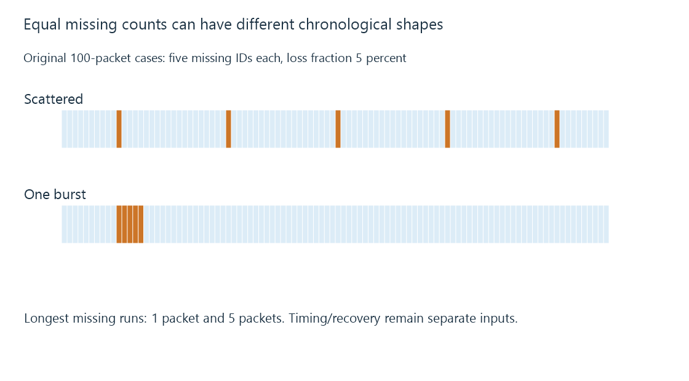

Packet loss, recovery and media deadlines
Packet loss counts absent delivery under a specified observation and threshold, while recovery, burst shape and media dependencies determine the application consequence.
Five packets can be missing from a hundred in several different patterns. The count is the same, but the recovery and timing consequences need not be.
Packet loss describes absence under the measurement’s sent-set, observation point and waiting rules.
State which deliveries were expected
Use this original packet-ID exercise:
{
"sentCount": 100,
"scatteredMissing": [10, 30, 50, 70, 90],
"burstMissing": [10, 11, 12, 13, 14]
}
Both cases have five missing IDs and a five-percent loss fraction. The burst has a contiguous missing run of five; the scattered case’s longest missing run is one.

A transport recovery process can react differently to those sequences. The final percentage alone loses their chronological shape.
Late and missing need a threshold
A receiver observing no packet yet cannot know whether it will arrive later. A measurement defines when its waiting ends and how the packet is classified.
A media deadline can be shorter than a transport’s eventual recovery time. A packet arriving after that deadline can be useless for the intended presentation even while it is eventually delivered.
Retain the observation time and threshold when comparing loss reports from different tools or layers.
Link retries and transport retries are separate
A wireless link can retry a frame before the transport receives the data. A retransmitted TCP range can recover missing bytes later still.
Those observations should not be merged into one count without a definition. Many link retries can reduce useful airtime even when the receiver eventually obtains every transport byte.
TCP’s ordered stream also retains later data behind a missing position. UDP leaves the application protocol to choose its own recovery and ordering behavior.
A packet is not a video frame
Encoded pictures, audio units and container structures can span packets. One lost packet can affect several dependencies; another can be recovered before the decoder notices any missing input.
Concealment and independent entry points change the visible result. The number of absent transport packets does not directly equal a number of lost video frames.
A visible frozen picture can consequently involve transport waiting, unrecovered media data or another stage. Playback buffering connects retained usable input with presentation timing.
Observe the direction and layer that failed
Loss in the request/acknowledgment direction can affect forward delivery too. A gateway counter and client capture can also refer to different points.
See Also
- TCP: an ordered byte stream for media delivery
- UDP datagrams and application delivery policy
- Network jitter and changing packet delay
- Wi-Fi signal quality, noise and useful airtime
- Buffering, ready media and playback reserve